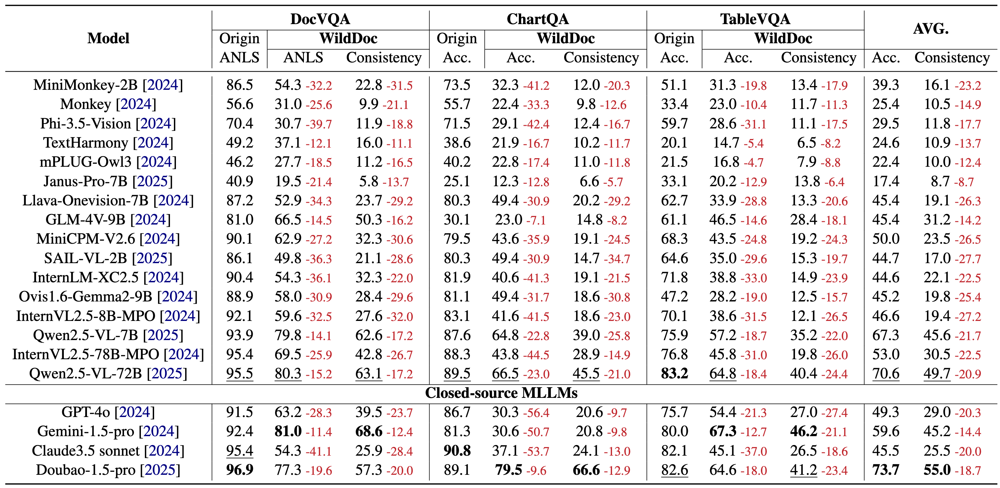
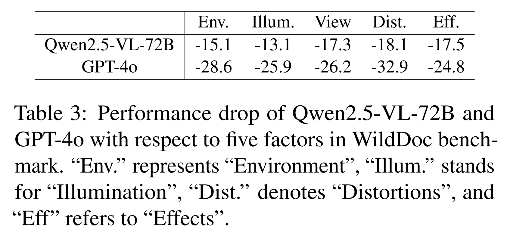
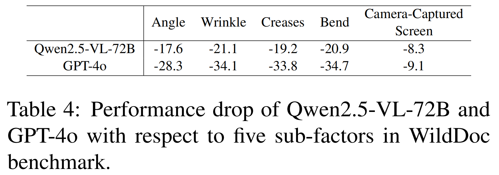

Based on WildDoc, we conduct experiments to evaluate numerous representative MLLMs, including general MLLMs (e.g., Qwen2.5-VL ) and the leading closed-course MLLMs (e.g., GPT-4o ). The experiment results demonstrate that
(1) Existing MLLMs exhibit a large performance decline in WildDoc compared to traditional document benchmarks, with models like GPT-4o showing an average performance decrease of 35.3. (2) Existing MLLMs demonstrate inadequate robustness in document understanding. This is evident
from their lower scores in consistency evaluations, with Qwen2.5-VL-72B achieving the highest score of 49.7. (3) Some models exhibit minimal performance variations and tend to saturate on the original benchmark, yet they experience significant
performance declines and disparities on WildDoc.

The performance of several state-of-the-art open-source and closed-source MLLMs. All models suffers a decline in all three subsets, GPT-4o suffers a decline of 28.3, 56.4, 21.3 in the three subsets, respectively. The results indicate that
current MLLMs have not yet achieved satisfactorylevels of document understanding capability when handling real-world scenarios. For performance comparison in our WildDoc, we recommond the ''Consistency'' metric.


We provide more analysis on the different real-world factors. Results reveal a substantial performance degradation of MLLMs when facing documents affected by common real-world distortions such as wrinkles, bends, and creases.